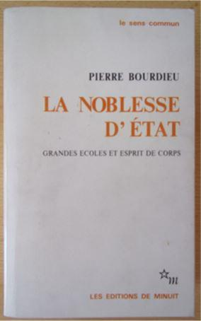

L’Éducation Nationale n’a jamais craint les gourous. Le premier fut Jean-Jacques Rousseau, l’actuel reste Philippe Mérieu, on a évoqué Ferdinand Buisson... Et Pierre Bourdieu (1930-2002) ne fut pas le moindre.
Gourou, il avait tout pour l’être lui qui, doté d’un nom à consonnance divine, fut un exemple de promotion républicaine, partant d’une très modeste origine rurale pour arriver au Collège de France, en passant par Normale Sup et l’agrégation de philosophie. Mais il sut rester humble, avouant lui-même avoir délaissé « les grandeurs trompeuses de la philosophie »1, pour choisir de se tourner vers la sociologie, une science neuve alors bien moins considérée. Même si son fondateur, Auguste Comte, voyait en elle une nouvelle et ultime religion, celle de l'Humanité enfin débarrassée de l’idée d’un Dieu qui ne fût pas elle-même.
Le livre « culte » de Bourdieu, Les Héritiers, écrit en collaboration avec Jean-Claude Passeron, et paru en 1964, est le résultat d’une enquête statistique menée auprès des étudiants de facultés de Lettres. L’école y est présentée comme une institution reproduisant les inégalités sociales, en survalorisant les savoirs et les codes de la bourgeoisie au détriment de ceux des couches populaires de la société. Il en résulterait une violence symbolique exercées contre ces dernières, condamnant leurs enfants à une médiocrité scolaire injustement interprétée comme une absence de dons. De même, examens et concours sont présentés comme des mécanismes d'élimination et de sélection, perpétuant et légitimant l'héritage culturel, et de ce fait l'ordre établi. Le discours est séduisant, il s’inscrit bien dans une posture générale de dénonciation des rapports dominants-dominés (Bourdieu fut un défenseur des sans-papiers, des homosexuels, des chômeurs, et un pionnier des études sur le genre, avec La domination masculine, 1998).
Bourdieu enfonce le clou vingt-cinq ans plus tard dans un essai sur la « noblesse d’État »2 : les grandes écoles, selon lui, assurent la transmission quasi-automatique du pouvoir économique et social aux enfants de ceux qui l'ont déjà. « La Rue-d'Ulm n'a jamais compté une proportion aussi élevée de fils d'instituteurs ou de professeurs. La même chose pour les fils de gros commerçants ou d'industriels à HEC ou les fils de hauts fonctionnaires à l'ENA »3. Quelle révélation ! Ses trois fils ont bien fait Normale Sup, comme papa.
Conclusion logique : si l’école veut jouer son rôle d’égalisation des chances, il faut mettre un terme à ce processus de discrimination, en y réduisant le poids des enseignements « bourgeois » (les « humanités », au premier rang desquels le Latin et le Grec), et inversement en y promouvant les disciplines réputées socialement moins élitistes, notamment les mathématiques. Nombre de réformes post-soixantuitardes se sont, de près ou de loin, inspirées des théories bourdieusiennes, la plupart mises en œuvre par des gouvernements « de droite », impuissants à contrecarrer l’influence de leurs partisans au sein de l’Éducation Nationale : le collège unique, la sélection par les maths, la disparition programmée des langues mortes, la suppression des classements et des notes, l’objectif de conduire 100 % des élèves au baccalauréat, la notation par compétences… Certains jusqu’au-boutistes iront jusqu’à préconiser d’apprendre aux enfants à lire sur des notices de machines à laver.
Carole Barjon, journaliste qui s’avoue pourtant d’entrée de jeu « de gauche », laisse dans un livre, consacré à la faillite de l’école républicaine, la parole à un haut fonctionnaire incrusté depuis quarante ans au Ministère : pour lui, le niveau de connaissances exigé des élèves à leur sortie du système scolaire devrait s’aligner sur le plus bas obtenu4. Égalité oblige.
Comment s’étonner, dès lors, si la France est, comme on l’a déjà souligné, en 34e position sur 50 au classement PISA ? Mais qu’elle y baisse encore est souhaitable, au nom de l’égalité !
Son système scolaire n’a plus à instruire les enfants, ni même à les éduquer, ce qui impliquerait de les faire grandir mais, moderne lit de Procuste, à égaliser leur condition par le bas. François-Xavier Bellamy, autre prodige de la méritocratie républicaine, fait de Pierre Bourdieu l’un des trois principaux responsables, avec Descartes et Rousseau, du refus actuel de transmettre, qui produit depuis plusieurs décennies des jeunes Français « déshérités »5 (d’autres ont préféré parler de « crétins »)6. Pour lui, « il n'est pas de plus urgente ni de plus belle mission que de transmettre l'héritage culturel qui peut seul constituer pour l'avenir l'unité de notre pays, en même temps que la liberté de ceux qui y vivront ».
Ce n’est certes pas avec de telles idées que l’école de la République le canonisera.
J-F. C.
NOTES ET RÉFÉRENCES
1. Bourdieu (Pierre). Esquisse pour une auto-analyse, éditions Raisons d'agir, 2004, p. 58.
2. Bourdieu (Pierre). La noblesse d’État. Grandes écoles et esprit de corps. Paris, Éditions de Minuit. 1989.
3. Entretien de Didier Éribon avec Pierre Bourdieu, à l'occasion de la publication de « La noblesse d'État » (1989) in Le Nouvel Observateur, 9-15 mars 1989, pp.80-82.
4. Barjon (Carole). Mais qui sont les assassins de l’école, Paris, Robert Laffont, 2016.
5. Bellamy (François-Xavier). Les déshérités, ou l’urgence de transmettre. Paris, Plon, 2014.
6. Brighelli (Jean-Paul). La fabrique des crétins. La mort programmée de l'école. Paris, Jean-Claude Gawsewitch, 2005.
Partager cette page